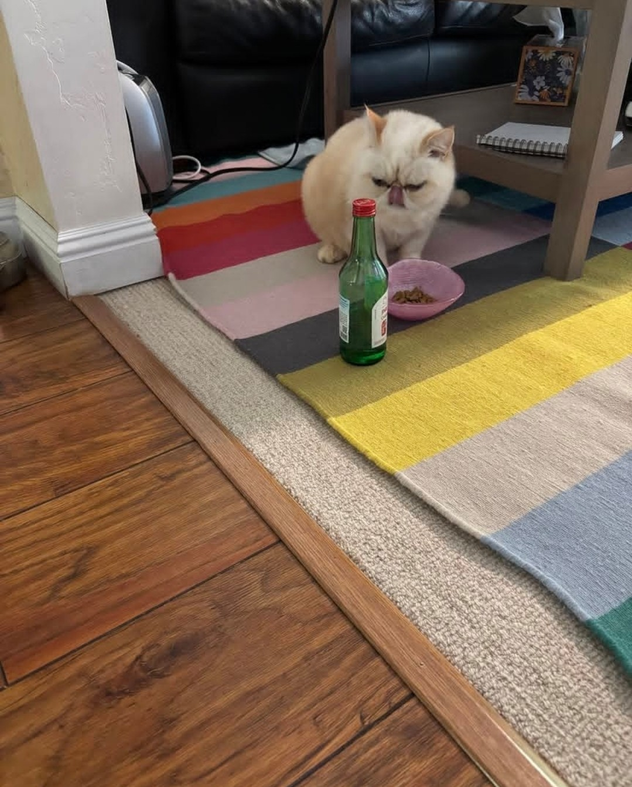

About Me
Email me here!
to bottom of Page
Places I have visited
Here are some images from when I traveled the world. These were my top three favorite places. The food was amazing!
- Honolulu
- Haleakala National Park
- Jeju Island in Korea
Favorite Animals
I definitely consider myself a cat person. I love dogs too, but I get along better with cats. Here are 2 images of my favorite animals.
He is still in a dream... zzzzz

This is my friends's cat. He had a rough time doing nothing all day!
Favorite Movie
Here is a picture of my favorite movie. If you click on it, it will take you to my About Me page. Why? Well... because why not? ;
Down below is a small table of what I do Monday through Wednesday between the hours of 12pm and 5pm
|
Monday |
Tuesday |
Wednesday |
| 12pm ~ 1pm |
lunch |
| 1pm ~ 2pm |
Homework |
Grocery store |
Meet friend |
| 2pm ~ 3pm |
Take a rest |
Homework |
| 3pm ~ 4pm |
run errans |
Walk with the dog |
| 4pm ~ 5pm |
Preparing dinner |
Go back to top